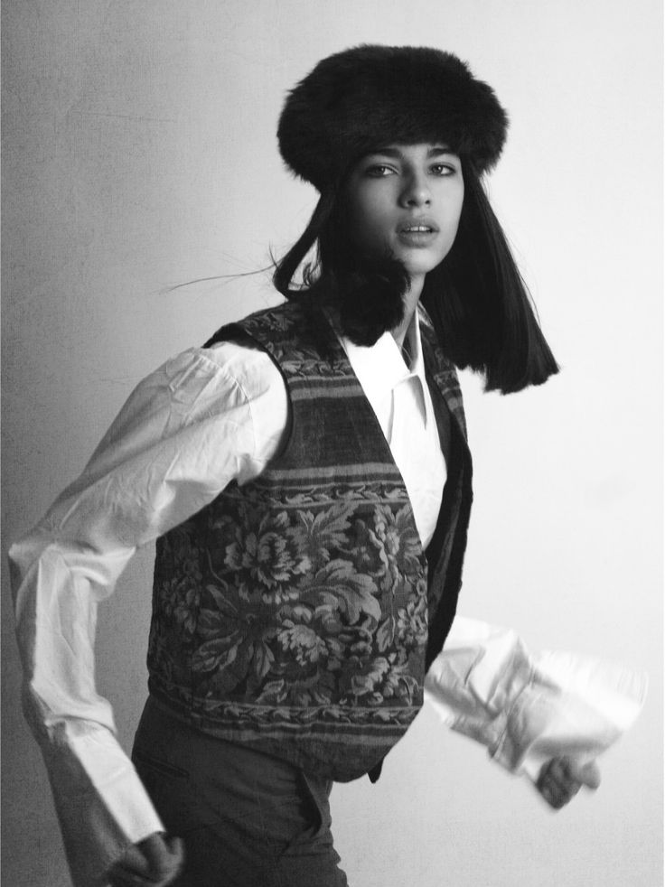

This proems exists for literary purposes solemnly to enhance awareness and cautious observation regarding this matter. What you'll find past this page is Tatjana's world as Dolores Bahia Roubille while it's being built session by session — contemplations, and the notes that sit between them.
A literary work suspended between existence and invention, reflecting an arbitrary, gaudy life shaped by social expectation and poured into phrases — a sheath for a soul to reside in, or simply to exist within. Frames are numbered in the order they were taken, and Sessions holds the unedited context around them. Nothing here is presented as belonging solely to its author.

2019 Women Paris Media ArchiveRepresentation inquiries for Tatjana are handled directly.